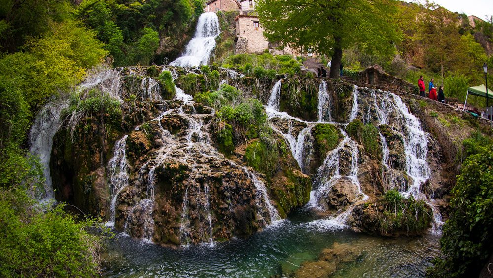
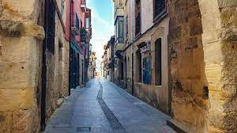
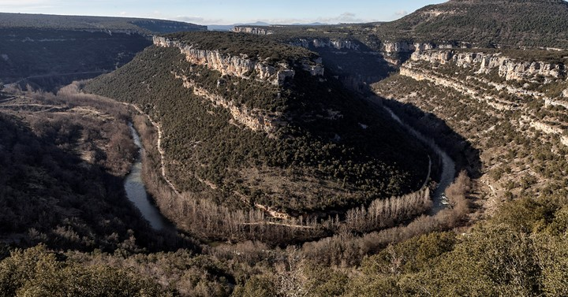
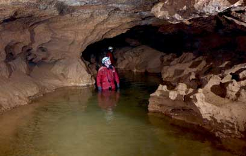

En lo profundo de los Cañones del Ebro, al norte de la provincia de Burgos, se esconde uno de los pueblos más asombrosos de Castilla: Orbaneja del Castillo. Un lugar donde la naturaleza y la arquitectura parecen haberse puesto de acuerdo para crear algo único.
A pesar de lo que sugiere su nombre, del antiguo castillo ya no quedan restos visibles. Sin embargo, en tiempos medievales fue un punto estratégico de vigilancia y defensa durante la Reconquista. Desde aquí se controlaban los pasos del río y los caminos que unían el norte y el sur de Castilla. Su estructura defensiva se intuye aún hoy en lo encajonado del terreno y en las casas que parecen apilarse unas sobre otras.
Sus calles son empedradas, estrechas y llenas de encanto. Las casas de piedra y madera, muchas con balcones de flores, se disponen como si quisieran protegerse del frío o del paso del tiempo. Caminar por ellas es sentirse en otro siglo.
La joya del pueblo es sin duda su cascada. El agua brota directamente de la Cueva del Agua, situada en lo alto, y desciende por el centro del pueblo en forma de una impresionante catarata de más de 20 metros. En épocas de lluvia, su fuerza atrona y llena el ambiente de vapor y sonido. ¡Un espectáculo natural que parece sacado de una leyenda!
Como todo lugar mágico, Orbaneja también tiene su dosis de misterio. Se dice que en noches tranquilas, cuando la bruma envuelve la cueva y el agua apenas murmura, pueden escucharse voces antiguas. Algunos hablan de hadas del agua, otros de almas que aún guardan el paso del Ebro
El entorno es tan espectacular como el pueblo: formas rocosas con siluetas imposibles (como la famosa "pareja de los besos"), cuevas, senderos y miradores. Es un destino perfecto para amantes del senderismo, la fotografía, o simplemente para quienes buscan perderse en un lugar donde la naturaleza ha hecho arte.
Hoy, Orbaneja del Castillo sigue siendo pequeño, tranquilo y casi detenido en el tiempo. Pero cada año recibe a visitantes que quedan hechizados por su cascada, su historia y su magia natural. Es uno de esos pueblos que no se olvidan, porque más que verse... se siente.
La joya de Orbaneja es su cascada, que atraviesa el pueblo. En época de lluvias o deshielo, es un espectáculo natural único.
Sus calles empedradas, casas de piedra y balcones floridos te transportan a otra época. Es ideal para pasear y tomar fotos.
Desde Orbaneja puedes iniciar rutas que atraviesan desfiladeros espectaculares, cuevas y miradores naturales.
Una cueva activa de la que brota el arroyo que forma la cascada. Una experiencia natural que no te puedes perder.
Orbaneja se sitúa al noreste de Burgos, cerca del Parque Natural de las Hoces del Ebro. Accesible por la carretera BU-643 desde Escalada, es un viaje corto de unos 90 minutos desde la capital burgalesa.